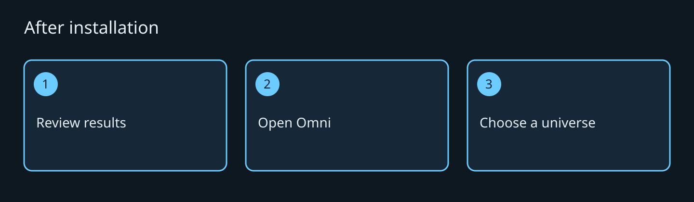
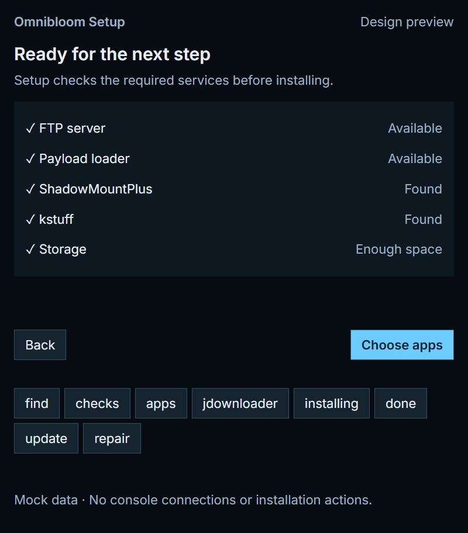

GET STARTED
From PC to sofa.
Use the Setup package that matches the release and your supported console environment.

- Read the release notes and supported firmware list. If your configuration is absent, stop and ask the project maintainers.
- Open Omnibloom Setup on your PC. Put the PC and console on your trusted home network.
- Use Find your PS5, or enter its address. Confirm the selected device before continuing.
- Review the checks. Resolve any red result before installing; save the check details for support.
- Choose apps. Bloom Core is required while other suite apps remain installed. Downloads and USB Files are selectable parts of the suite.
- JDownloader 2 is optional. Setup uses your own installation; its files are not bundled. The candidate step enables the engine only after its console checks pass. If the step fails, keep JDownloader 2 off and use the available downloader.
- Start installation and keep both devices available until Setup reports completion. Do not treat a partially completed progress bar as success.
- Open Omni on the console. Use the controller hints and choose a universe.



Update or repair
In Setup, open Installed apps and choose Update for a newer version or Repair for missing application files. Review the selected app and result. Keep your existing data and backups.
The release owner must supply verified package links, checksums, prerequisites and rollback instructions before this guide is published.